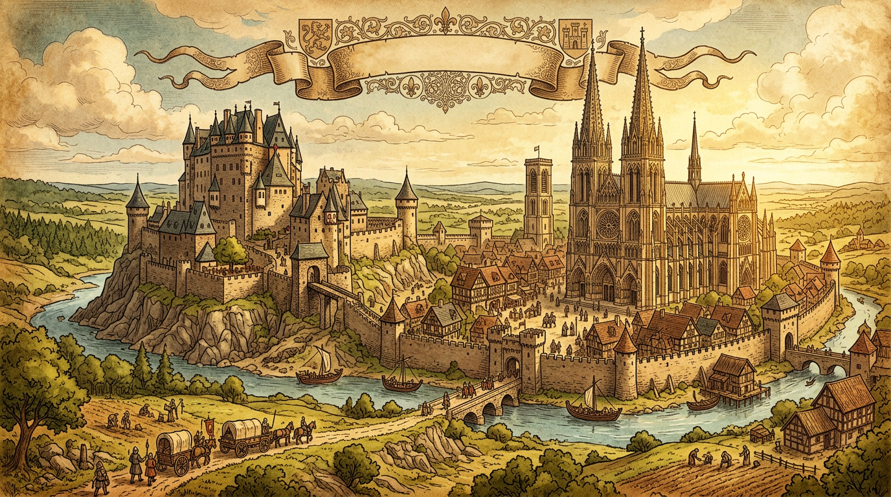

初中历史 · 世界古代史
九年级 · 课标匹配

❓ 为什么骑士要效忠领主？不效忠会怎样？
❓ 城堡真的像电影里那么豪华吗？农民能进去吗？
❓ 教会为什么能管国王？上帝比国王还大吗？
学完这一课，这些问题你都能自信地回答。
中世纪欧洲封建关系的核心是？
以下哪项是教会的主要权力？
And：学生知道国王权力大
But：但不懂国王如何管理国家
Therefore：理解'我的附庸的附庸不是我的附庸'
中世纪欧洲像搭积木：国王把土地分给大贵族（比如给威廉1000亩），大贵族再分给小贵族（威廉给骑士200亩），小贵族给农民种。但国王管不了骑士，这叫'封建金字塔'。比如法国国王直接控制的土地只有巴黎周边，其他都被贵族瓜分了。
🌍 就像班级值日：老师安排给班长，班长分给小组长，小组长再派给同学。但老师可能不知道具体谁在扫地。
以下哪项是封建制度特点？
对比考古发现的银餐具与谷物证据
识别：说出「中世纪欧洲」中最重要的三个关键词，并写出它们的含义。
解释与比较：解释「中世纪欧洲」的核心结论，比较它与一个相近概念的区别。
运用与计算：把结论代入一个具体例子，求出结果或做出判断。
设计与创造：设计一个新情境，验证这个结论是否依然成立，并说明理由。
And：学生见过农村种地
But：不理解农民为何不逃跑
Therefore：明白庄园是'迷你王国'
一个典型庄园（比如英国温彻斯特庄园）有：1个领主城堡、300亩耕地、20户农奴、1座磨坊和教堂。农奴每周要在领主地里干3天活，自己种的地收成交1/10给教会。他们不是奴隶，但未经允许不能离开——就像被绑在土地上的螺丝钉。
🌍 就像学校小卖部：你用饭卡消费（庄园用代币），只能在校园买（不能去外面），还要帮老板理货（服劳役）。
农奴与奴隶最大区别是？
And：学生知道教堂是宗教场所
But：想不到教会比国王还富
Therefore：认识'上帝的归上帝'的威力
教会掌握三大法宝：1. 收'什一税'（每10个鸡蛋要交1个）；2. 控制思想（说异端会被烧死）；3. 土地多（占欧洲1/3耕地）。比如克吕尼修道院有1000名修士，拥有200个庄园，比很多国王都阔气！
🌍 就像游戏里的VIP系统：教会是超级VIP，既能收会员费（什一税），还能封号（开除教籍）。
教会权力的基础不包括？
将封建制度分解为土地分封、效忠誓言、军事服务三层关系
用'上帝的归上帝，凯撒的归凯撒'理解教权与王权斗争
对比中国西周分封制与欧洲封建制的异同
通过《贝叶挂毯》观察诺曼征服战争的真实场景
用'微信红包'类比领主分封土地：发红包者获得忠诚
先独立作答，再点选项查看对错与错因。
城堡地窖发现发霉谷物最能说明
教堂石碑记载瘟疫说明当时
3米厚城墙主要防御
城堡中____阶层负责管理庄园账目
答案：管家
封建等级中的管理者
中世纪欧洲____制度规定农民不得离开领地
答案：农奴
人身依附关系
（真题）领主向骑士授予采邑时，骑士需承诺？
（迁移）若用快递驿站类比庄园，驿站站长相当于？
（概念）三级会议中'第三等级'主要指？
✅ 农奴有份地但需服劳役，奴隶无人身权利
💡 混淆'奴'字现代与中世纪含义
✅ 教权需通过开除教籍等间接手段施压
💡 影视剧夸张表现导致误解
口诀：土地换忠诚，骑士守承诺，教会管灵魂，农民种麦禾
类比：封建制度像加盟奶茶店：总部(国王)给品牌(土地)，店主(领主)交管理费(兵役)
复制提示词到 AI 学伴，生成「中世纪欧洲 历史课件」的时间轴或事件提纲；也可以上传你手绘的示意图，请 AI 学伴点评。
复制后可粘贴到 AI 学伴继续对话。